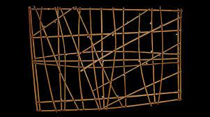

221. Navigation chart. Marshall Islands, Micronesia.
19th to early 20th century CE Wood and fiber
- Content
- Marshall Island are low-lying and hard to see from a distance
- Charts meant to be memorized prior to a voyage; not necessarily used during a voyage
- Form
- Horizontal and vertical sticks support the chart
- Diagonal lines indicate wind and water currents
- Small shells indicate the position of the islands on the chart
- Chart is made of wood, therefore waterproof and buoyant
- Content
- Marshall Island are low-lying and hard to see from a distance
- Charts meant to be memorized prior to a voyage; not necessarily used during a voyage